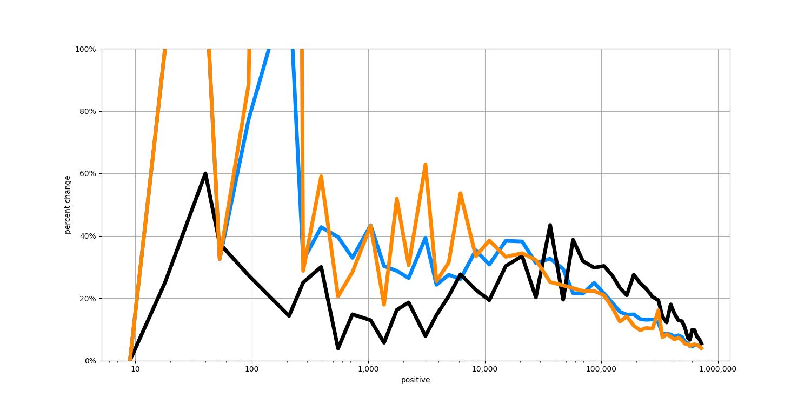

That is 27,016 more cases than yesterday, or a one-day increase of 2.9%. Yesterday there were 35,936 new cases, a one-day increase of 4.0%. The rate of new cases today is lower than yesterday.
The number of confirmed cases is recently growing at about 3.7% per day. That is doubling about every 19.2 days. At the current rate, the total number of confirmed cases will be about 1,200,000 in 7 days.
The following chart shows the rate-of-change over time of different statistics. The blue line shows the rate of change in the total confirmed infections. The orange line shows the rate of change in the total number of tests administered. The black line shows the rate of change in the total number of deaths.
Nebraska has the fastest-growing rate of new infections at about 12.3% per day. That is doubling about every 6.0 days. Nebraska currently has 2,732 confirmed cases, but at the current rate, it will have about 6,159 in 7 days. Puerto Rico has the second fastest-growing rate of new infections at about 11.7% per day. That's doubling about every 6.3 days, and will cause total cases to increase from 1,371 to 2,974 in 7 days.
| State | Daily increase |
|---|---|
| Iowa | 10.0% |
| Kansas | 9.5% |
| Minnesota | 7.3% |
| Arkansas | 6.7% |
| New Mexico | 6.4% |
| North Dakota | 6.3% |
| Rhode Island | 6.2% |
| Delaware | 6.0% |
| Maryland | 5.9% |
| Illinois | 5.8% |
| Colorado | 5.6% |
| Tennessee | 5.4% |
| Kentucky | 5.2% |
| Massachusetts | 5.2% |
| North Carolina | 5.2% |
| Wisconsin | 5.1% |
| Virginia | 5.0% |
| Indiana | 4.8% |
| Mississippi | 4.8% |
| Arizona | 4.6% |
| District of Columbia | 4.6% |
| New Hampshire | 4.6% |
| Utah | 4.6% |
| California | 4.5% |
| South Dakota | 4.5% |
| Pennsylvania | 4.1% |
| Texas | 4.0% |
| South Carolina | 3.7% |
| Alabama | 3.5% |
| Missouri | 3.3% |
| New Jersey | 3.3% |
| Georgia | 3.1% |
| Nevada | 3.1% |
| Ohio | 3.1% |
| Connecticut | 3.0% |
| Oklahoma | 3.0% |
| Wyoming | 3.0% |
| Maine | 2.9% |
| New York | 2.9% |
| Oregon | 2.9% |
| Florida | 2.7% |
| Michigan | 2.7% |
| West Virginia | 2.7% |
| Idaho | 1.7% |
| Louisiana | 1.5% |
| U.S. Virgin Islands | 1.4% |
| Washington | 1.4% |
| Guam | 1.3% |
| Hawaii | 0.9% |
| Vermont | 0.8% |
| Montana | 0.5% |
| Alaska | 0.4% |
| American Samoa | 0% |
| Northern Mariana Islands | 0% |